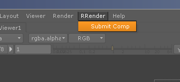

Note: Nuke PLE is not supported.
The scene parser is not able to read the scene information as Nuke encodes the PLE files.
If you want to use interactive licenses for Nuke, then you have to either change the render config or add the flag to the client config.
If you have plugins you need to use with Nuke, then you can place them into the folder
RR\render_apps\renderer_plugins\nuke\win_x64\6\
(of course you have to change the os and nuke version in the path)
init.py:
You can also place a file named init.py in that folder.
Inside this python script, you can define plugin paths like (and print the path to check if everything is right):
nuke.pluginAppendPath('//grey09/rugbybugs/Production/Scripts/deploy/scripts')
nuke.pluginAppendPath('//grey09/rugbybugs/Production/Scripts/deploy'/nuke/gizmos')
nuke.tprint('')
nuke.tprint('OUR FARM ENV')
nuke.tprint(nuke.pluginPath())
nuke.tprint('')
Please execute the rrWorkstationInstaller install the submission plugin.
In Nuke, you have to run the script as shown in the screenshot.
It will read all comp settings and send them to the rrSubmitter.
Note: You can also start the rrSubmitter manually and load (multiple) scene files.
BUT loading the comp file directly into the rrSubmtter can not evaluate scripted file names in your write nodes.

With Local Render Out Nuke will write to the Local Data Folder.
So you do not have an enduring file connection to your fileserver. The output files are copied at once when they are finished.
To use Local Render Out with Nuke, you have to have Local Scene Copy as well.
The rrClient runs a pre-script to replace all paths for read and write nodes (scripted filenames are resolved).
Then it saves the new nuke composite locally.
If you want to render one view, then please enter --view myview to the Additional commandline flags at the rrSubmitter
The error looks like this:
License failure:
License server machine is down or not responding.
See the system adminstrator about starting the license server system, or
make sure you're referring to the right host (see LM_LICENSE_FILE).
Feature: nuke_r
Hostname: bmd.nas.com
License path: C:\ProgramData\The Foundry\FLEXlm\example.lic;C:\Program Files\The Foundry -
\FLEXlm\*.lic
FLEXnet Licensing error:-96,7. System Error: 11004 "WinSock: Valid name, but no record (NO_ADDRESS)"
For further information, refer to the FLEXnet Licensing End User Guide,
available at "www.macrovision.com".
Solutions with an environment variable:
(no restart required)
Please refer to your Nuke documentation what you have to set as value for the env variable.
If you use Shotgun nodes, then you have to convert your Nuke files:
https://toolkit.shotgunsoftware.com/entries/23481723-Write-Node#Render%20Farm%20Integration%202
RR has prepared a render config for such comp files.
They will be converted at rendering.
You need to have Local Scene Copy enabled for the job.
And the shotgun toolkit (sgtk) module needs to be copied into [RR]/plugins/python_modules/